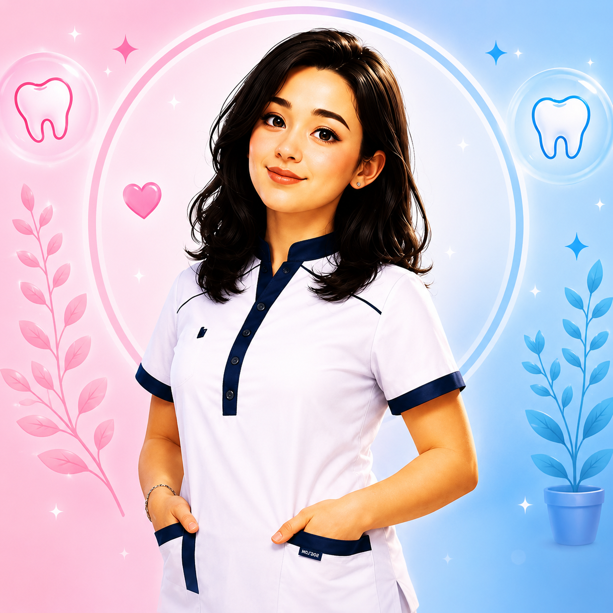
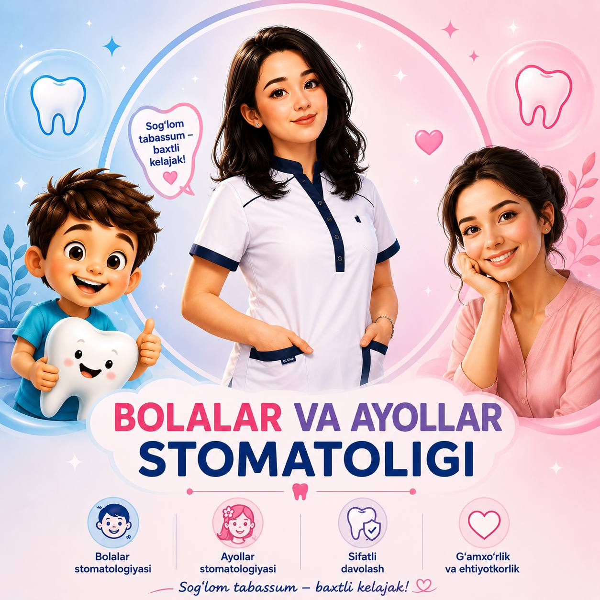

Ayollar uchun
Estetik restavratsiya, professional oqartirish va tabassum dizayni bo'yicha individual yondashuv. Har bir qadam xotirjam tushuntiriladi, natija esa tabiiy va nafis ko'rinadi.
Bolalar va Ayollar Stomatologi · Qarshi
Ismatova Nargis bolalar va ayollar stomatologiyasida muloyim va professional yondashuv bilan ishlaydigan shifokor. Har bir bemor o'zini xavfsiz, qulay va tushunilgan his qilishi uchun alohida muhit yaratilgan.

Ayollar uchun estetik parvarish
Bolalar uchun do'stona muhit
Estetik restavratsiya, professional oqartirish va tabassum dizayni bo'yicha individual yondashuv. Har bir qadam xotirjam tushuntiriladi, natija esa tabiiy va nafis ko'rinadi.
Quvnoq muhit, mehribon muloqot va stomatologdan qo'rquvni yo'qotadigan o'yinli yondashuv. Profilaktik ko'riklar orqali tishlar sog'lig'i yoshdan muhofaza qilinadi.
Xizmatlar
Har bir xizmat oldindan ko'rik va aniq davolash rejasi asosida tavsiya etiladi.
Tish og'rig'ini tezda bartaraf etish va kariesni zamonaviy materiallar yordamida samarali davolash. Muolaja iloji boricha qisqa vaqtda va ehtiyotkorlik bilan o'tkaziladi.
Tishning tabiiy shakli va rangini saqlab, yuqori sifatli kompozit materiallar bilan plomba va estetik restavratsiya amalga oshiriladi.
Tosh va yumshoq cho'kindini ultratovush usulida olib tashlash, tishlarni jilolash — sog'lom milk va yangi nafas uchun zarur profilaktika.
Gingivit, periodontit va boshqa milk kasalliklarini erta bosqichda aniqlash hamda davolash. Kasallikning oldini olish — eng yaxshi davolash.
Har yoshdagi bemor uchun alohida yondashuv: bolalarda stomatologdan qo'rquvni kamaytirish, kattalar uchun qulay va tez davolash sharoiti.
Rentgen va klinik diagnostika orqali muammoni aniq aniqlash, so'ngra zamonaviy usullar bilan samarali davolash rejasini tuzish.
Tish sog'lig'ingiz haqida savol bormi? Keling, ko'rib chiqaylik — birinchi tashrif va maslahat mutlaqo bepul. Qabulga yozilish bir daqiqa vaqt oladi.

Ayollar estetik stomatologiyasi va bolalar profilaktikasi bo'yicha muntazam malaka oshirish kurslari
Shifokor haqida
Ismatova Nargis har bir bemorni tinglab, davolash jarayonini bosqichma-bosqich tushuntiradi. Ayollar uchun estetik natija, bolalar uchun esa ishonch va qo'rquvni engish birinchi o'rinda turadi.
Nima uchun biz?
Ayollar tabassumi uchun tabiiy rang, shakl va nozik restavratsiya.
Iliq ranglar, quvnoq bezaklar va muloyim muloqot — bola o'zini erkin his qiladi.
Yumshoq anesteziya va bemor holatini doimiy kuzatib borish.
Davolash bosqichlari, xarajatlar va parvarish qoidalari oldindan tushuntiriladi.
Mijozlar fikri
"Tabassumim tabiiy va chiroyli chiqdi. Muolajadan oldin hamma narsa xotirjam tushuntirildi, umuman qo'rqmadim." — Dilnoza A.
"O'g'lim stomatologdan qo'rqardi. Endi quvnoq xonani ko'rib, o'zi yugurib kiradi. Rahmat, Nargis opa!" — Nilufar T.
"Telegram bot orqali vaqt tanlash juda qulay. Ona-bola bo'lib bir kunda ko'rikdan o'tdik." — Malika S.
Bog'lanish
Sizga qulay vaqtni tanlang — Telegram bot orqali bir daqiqada qabulga yozilasiz.